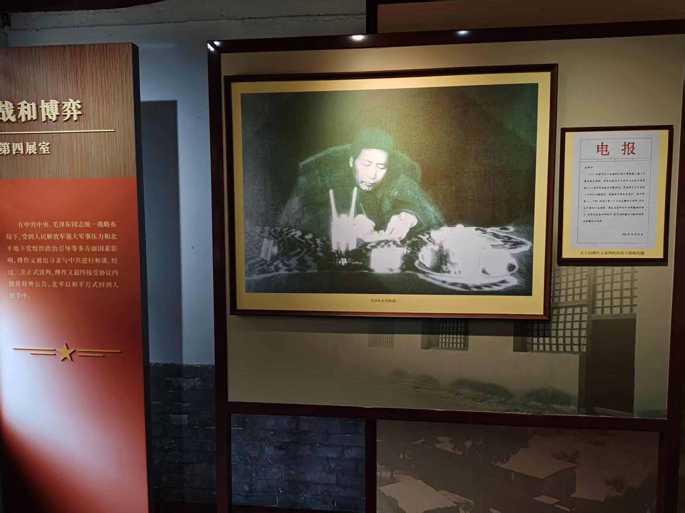
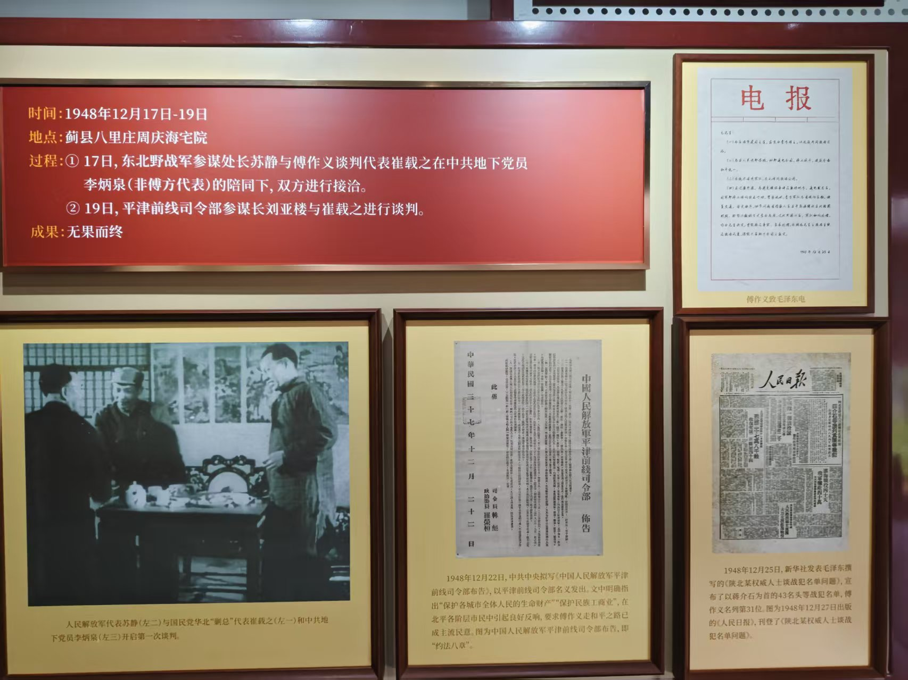
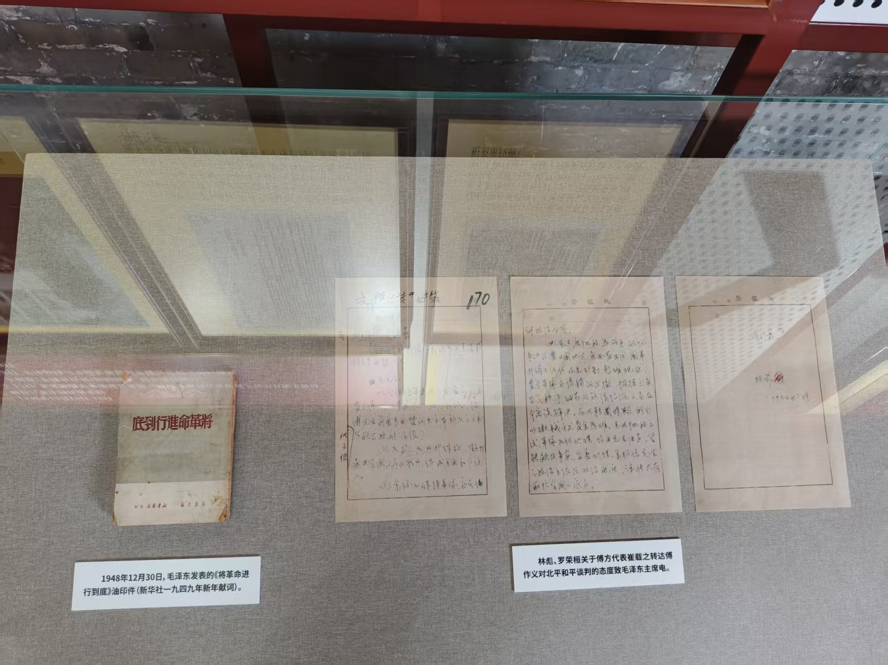
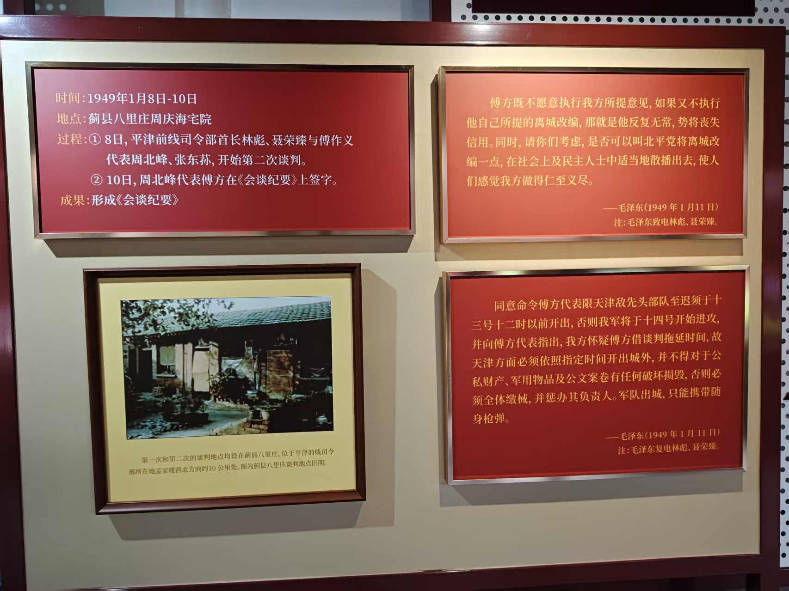
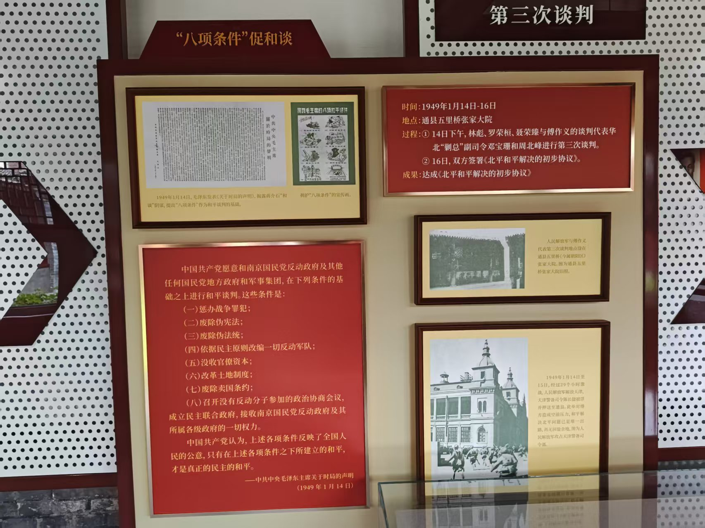
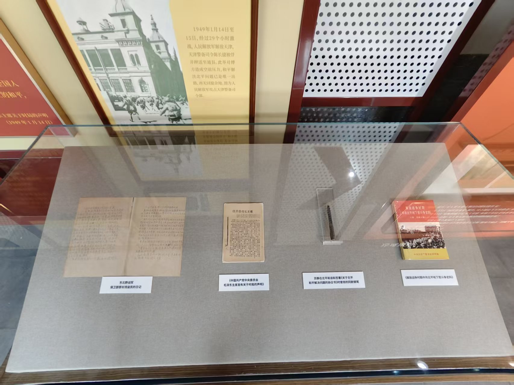
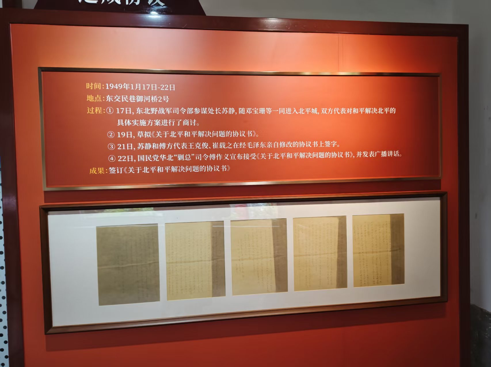
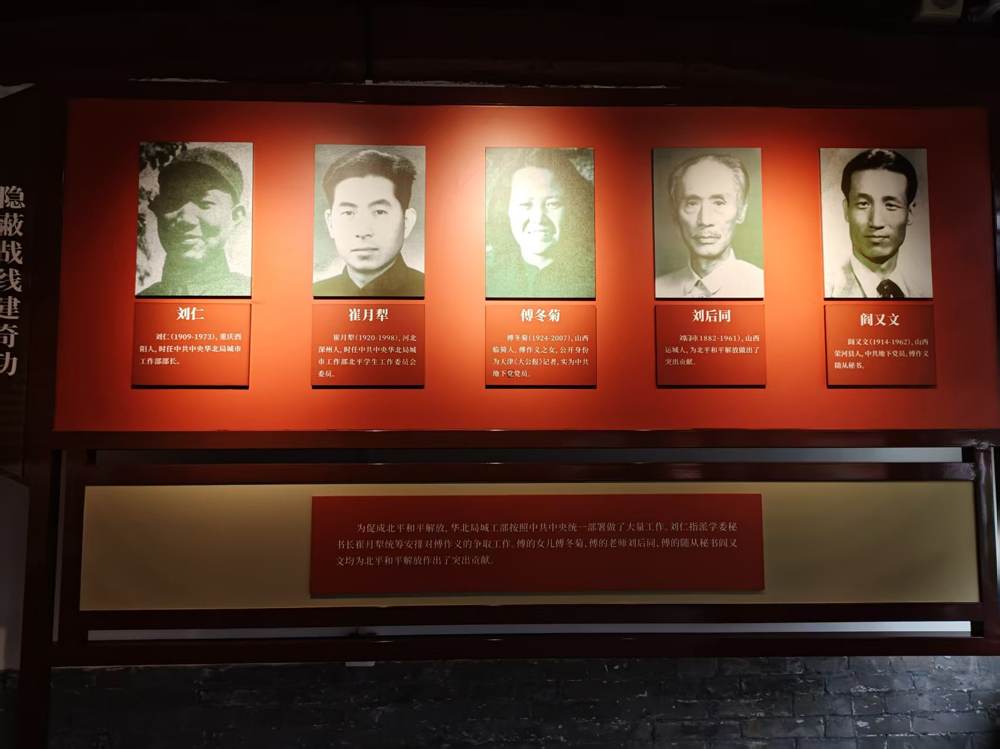

展区 4：战和博弈
欢迎来到第四展区，战和博弈。

左侧展板介绍中共中央在毛泽东同志统一战略部署下，通过军事压力与地下党政治引导促成傅作义和谈；中央大幅黑白照片为毛泽东在西柏坡工作场景，右侧陈列《关于同傅作义谈判的策略问题》电报，体现最高决策层对和谈的精准把控。

红色展板详述首次谈判于蓟县八里庄周庆海宅院举行，由苏静与崔载之接洽、刘亚楼参与，最终无果而终；下方照片为苏静、崔载之与李炳泉开启谈判的历史瞬间，右侧并列展示《傅作义致毛泽东电》与《人民日报》刊载的战犯名单，凸显谈判初期的紧张对峙。

玻璃展柜内陈列1948年12月30日毛泽东发表的《将革命进行到底》油印件，以及林彪、罗荣桓关于傅方代表态度的电文手稿，这些原始文件是理解中共坚持原则、推动和谈走向的关键物证。

展板说明第二次谈判仍在蓟县八里庄进行，林彪、聂荣臻与傅方代表周北峰、张东荪会谈并形成《会谈纪要》；右侧引用毛泽东1月11日电文，强调“仁至义尽”策略与对傅方拖延战术的警惕，下方照片为谈判地点旧貌。

左侧展板列出毛泽东1949年1月14日提出的“八项条件”，作为和谈基础；右侧说明第三次谈判于通县五里桥张家大院举行，邓宝珊与周北峰签署《北平和平解决的初步协议》，下方照片为谈判地点与天津解放后解放军进入市区的场景，标志和平进程取得实质性突破。

展柜内陈列东北野战军保卫部部长钱益民的日记、《中国共产党中央委员会毛泽东主席发表关于时局的声明》、艾静在北平和谈起草协议书时使用的钢笔，以及《解放战争时期中共北平地下党斗争史料》等，从不同视角还原谈判背后的细节与人物。

展板详述1949年1月17日至22日，苏静与傅方代表王克俊、崔载之在东交民巷御河桥2号完成最终协议签署，傅作义于22日宣布接受协议并发表广播讲话；下方陈列协议书签字页原件，是北平和平解放的法律凭证。

红色背景墙展示五位关键人物肖像与简介：刘仁（中共华北局城市工作部部长）、崔月犁（学委秘书长）、傅冬菊（傅作义之女、地下党员）、刘后同（傅作义老师）、阎又文（傅作义随从秘书、地下党员），下方文字说明他们如何在傅作义身边开展统战与情报工作，为和平解放奠定坚实基础。